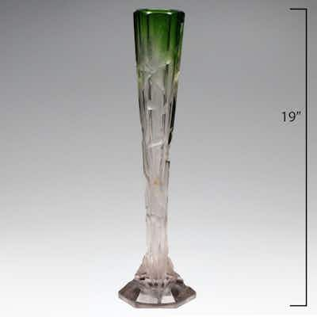

OUTPRICEDAntique Moser Karlsbad Emerald Cut Crystal Iris Vase
Tall emerald-to-clear cut crystal 'Iris' trumpet vase on faceted stepped foot, labeled at
0 min left
Current bid$209 · 22 bids
Est. value$209
Your max bid$79
All-in at max$126
Projected close$209
Margin at bid−$66
Details & price history →